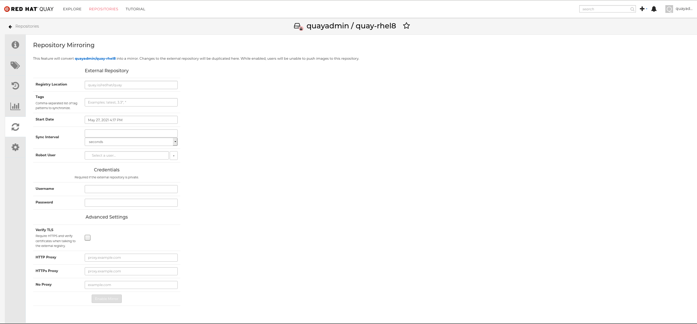
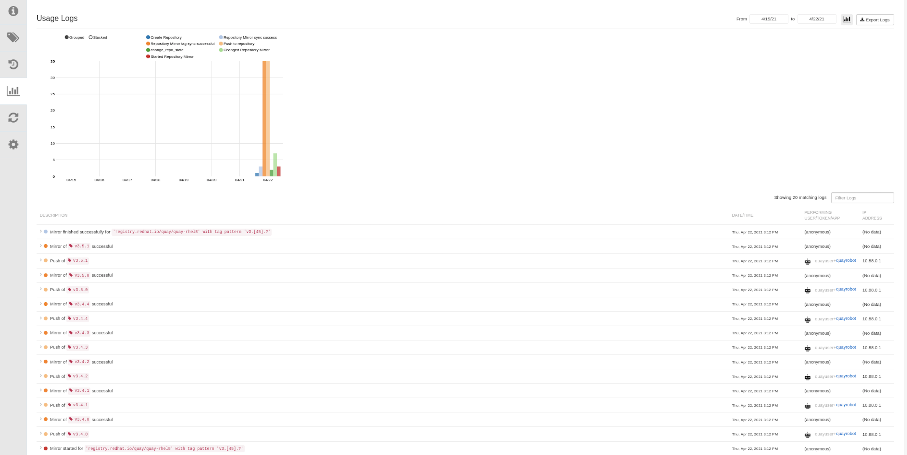

Red Hat Quay Quick Start Guide
Red Hat Quay Quick start guide
Abstract
- 1. General
- 1.1. Using SSL to protect connections to Red Hat Quay
- 1.1.1. Introduction to using SSL
- 1.1.2. Create a Certificate Authority and sign a certificate
- 1.1.3. Configuring SSL using the UI
- 1.1.4. Configuring SSL using the command line
- 1.1.5. Testing SSL configuration using the command line
- 1.1.6. Testing SSL configuration using the browser
- 1.1.7. Configuring podman to trust the Certificate Authority
- 1.1.8. Configuring the system to trust the certificate authority
- 1.2. Quay superuser
- 1.3. Repository Mirroring
- 1.1. Using SSL to protect connections to Red Hat Quay
Chapter 1. General
1.1. Using SSL to protect connections to Red Hat Quay
1.1.1. Introduction to using SSL
To configure Red Hat Quay with a self-signed certificate, you need to create a Certificate Authority (CA) and then generate the required key and certificate files.
The following examples assume you have configured the server hostname quay-server.example.com using DNS or another naming mechanism, such as adding an entry in your /etc/hosts file:
$ cat /etc/hosts ... 192.168.1.112 quay-server.example.com
1.1.2. Create a Certificate Authority and sign a certificate
At the end of this procedure, you will have a certificate file and a primary key file named ssl.cert and ssl.key, respectively.
1.1.2.1. Create a Certificate Authority
Generate the root CA key:
$ openssl genrsa -out rootCA.key 2048
Generate the root CA cert:
$ openssl req -x509 -new -nodes -key rootCA.key -sha256 -days 1024 -out rootCA.pem
Enter the information that will be incorporated into your certificate request, including the server hostname, for example:
Country Name (2 letter code) [XX]:IE State or Province Name (full name) []:GALWAY Locality Name (eg, city) [Default City]:GALWAY Organization Name (eg, company) [Default Company Ltd]:QUAY Organizational Unit Name (eg, section) []:DOCS Common Name (eg, your name or your server's hostname) []:quay-server.example.com
1.1.2.2. Sign a certificate
Generate the server key:
$ openssl genrsa -out ssl.key 2048
Generate a signing request:
$ openssl req -new -key ssl.key -out ssl.csr
Enter the information that will be incorporated into your certificate request, including the server hostname, for example:
Country Name (2 letter code) [XX]:IE State or Province Name (full name) []:GALWAY Locality Name (eg, city) [Default City]:GALWAY Organization Name (eg, company) [Default Company Ltd]:QUAY Organizational Unit Name (eg, section) []:DOCS Common Name (eg, your name or your server's hostname) []:quay-server.example.com
Create a configuration file
openssl.cnf, specifying the server hostname, for example:opensssl.cnf
[req] req_extensions = v3_req distinguished_name = req_distinguished_name [req_distinguished_name] [ v3_req ] basicConstraints = CA:FALSE keyUsage = nonRepudiation, digitalSignature, keyEncipherment subjectAltName = @alt_names [alt_names] DNS.1 = quay-server.example.com IP.1 = 192.168.1.112
Use the configuration file to generate the certificate
ssl.cert:$ openssl x509 -req -in ssl.csr -CA rootCA.pem -CAkey rootCA.key -CAcreateserial -out ssl.cert -days 356 -extensions v3_req -extfile openssl.cnf
1.1.3. Configuring SSL using the UI
This section configures SSL using the Quay UI. To configure SSL using the command line interface, see the following section.
Start the
Quaycontainer in configuration mode:$ sudo podman run --rm -it --name quay_config -p 80:8080 -p 443:8443 registry.redhat.io/quay/quay-rhel8:v3.5.4 config secret
-
In the Server Configuration section, select
Red Hat Quay handles TLSfor TLS. Upload the certificate file and private key file created earlier, ensuring that the Server Hostname matches the value used when creating the certs. Validate and download the updated configuration. Stop the
Quaycontainer and then restart the registry:$ sudo podman rm -f quay $ sudo podman run -d --rm -p 80:8080 -p 443:8443 \ --name=quay \ -v $QUAY/config:/conf/stack:Z \ -v $QUAY/storage:/datastorage:Z \ registry.redhat.io/quay/quay-rhel8:v3.5.4
1.1.4. Configuring SSL using the command line
Another option when configuring SSL is to use the command line interface.
Copy the certificate file and primary key file to your configuration directory, ensuring they are named
ssl.certandssl.keyrespectively:$ cp ~/ssl.cert $QUAY/config $ cp ~/ssl.key $QUAY/config $ cd $QUAY/config
Edit the
config.yamlfile and specify that you want Quay to handle TLS:config.yaml
... SERVER_HOSTNAME: quay-server.example.com ... PREFERRED_URL_SCHEME: https ...
Stop the
Quaycontainer and restart the registry:$ sudo podman rm -f quay $ sudo podman run -d --rm -p 80:8080 -p 443:8443 \ --name=quay \ -v $QUAY/config:/conf/stack:Z \ -v $QUAY/storage:/datastorage:Z \ registry.redhat.io/quay/quay-rhel8:v3.5.4
1.1.5. Testing SSL configuration using the command line
Use the
podman logincommand to attempt to log in to the Quay registry with SSL enabled:$ sudo podman login quay-server.example.com Username: quayadmin Password: Error: error authenticating creds for "quay-server.example.com": error pinging docker registry quay-server.example.com: Get "https://quay-server.example.com/v2/": x509: certificate signed by unknown authority
Podman does not trust self-signed certificates. As a workaround, use the
--tls-verifyoption:$ sudo podman login --tls-verify=false quay-server.example.com Username: quayadmin Password: Login Succeeded!
Configuring Podman to trust the root Certificate Authority (CA) is covered in a subsequent section.
1.1.6. Testing SSL configuration using the browser
When you attempt to access the Quay registry, in this case, https://quay-server.example.com, the browser warns of the potential risk:
Proceed to the log in screen, and the browser will notify you that the connection is not secure:
Configuring the system to trust the root Certificate Authority (CA) is covered in the subsequent section.
1.1.7. Configuring podman to trust the Certificate Authority
Podman uses two paths to locate the CA file, namely, /etc/containers/certs.d/ and /etc/docker/certs.d/.
Copy the root CA file to one of these locations, with the exact path determined by the server hostname, and naming the file
ca.crt:$ sudo cp rootCA.pem /etc/containers/certs.d/quay-server.example.com/ca.crt
Alternatively, if you are using Docker, you can copy the root CA file to the equivalent Docker directory:
$ sudo cp rootCA.pem /etc/docker/certs.d/quay-server.example.com/ca.crt
You should no longer need to use the --tls-verify=false option when logging in to the registry:
$ sudo podman login quay-server.example.com Username: quayadmin Password: Login Succeeded!
1.1.8. Configuring the system to trust the certificate authority
Copy the root CA file to the consolidated system-wide trust store:
$ sudo cp rootCA.pem /etc/pki/ca-trust/source/anchors/
Update the system-wide trust store configuration:
$ sudo update-ca-trust extract
You can use the
trust listcommand to ensure that the Quay server has been configured:$ trust list | grep quay label: quay-server.example.comNow, when you browse to the registry at
https://quay-server.example.com, the lock icon shows that the connection is secure:
To remove the root CA from system-wide trust, delete the file and update the configuration:
$ sudo rm /etc/pki/ca-trust/source/anchors/rootCA.pem $ sudo update-ca-trust extract $ trust list | grep quay $
More information can be found in the RHEL 8 documentation in the chapter Using shared system certificates.
1.2. Quay superuser
A superuser is a Quay user account that has extended privileges, including the ability to:
- Manage users
- Manage organizations
- Manage service keys
- View the change log
- Query the usage logs
- Create globally visible user messages
1.2.1. Adding a superuser to Quay using the UI
This section covers how to add a superuser using the Quay UI. To add a superuser using the command line interface, see the following section.
Start the
Quaycontainer in configuration mode, loading the existing configuration as a volume:$ sudo podman run --rm -it --name quay_config \ -p 8080:8080 \ -p 443:8443 \ -v $QUAY/config:/conf/stack:Z \ registry.redhat.io/quay/quay-rhel8:v3.5.4 config secret
-
Under the
Access Settingssection of the UI, enter the name of the user (in this instance,quayadmin) in theSuper Usersfield and clickAdd. Validate and download the
configurationfile and then terminate theQuaycontainer that is running in config mode. Extract theconfig.yamlfile to the configuration directory and restart theQuaycontainer in registry mode:$ sudo podman rm -f quay $ sudo podman run -d --rm -p 80:8080 -p 443:8443 \ --name=quay \ -v $QUAY/config:/conf/stack:Z \ -v $QUAY/storage:/datastorage:Z \ registry.redhat.io/quay/quay-rhel8:v3.5.4
1.2.2. Editing the config.yaml file to add a superuser
You can also add a superuser by editing the config.yaml file directly. The list of superuser accounts is stored as an array in the field SUPER_USERS.
Stop the container registry if it is running, and add the
SUPER_USERSarray to theconfig.yamlfile:$QUAY/config/config.yaml
SERVER_HOSTNAME: quay-server.example.com SETUP_COMPLETE: true SUPER_USERS: - quayadmin ...
1.2.3. Accessing the superuser admin panel
Restart the Quay registry:
$ sudo podman rm -f quay $ sudo podman run -d --rm -p 80:8080 -p 443:8443 \ --name=quay \ -v $QUAY/config:/conf/stack:Z \ -v $QUAY/storage:/datastorage:Z \ registry.redhat.io/quay/quay-rhel8:v3.5.4
Access the Super User Admin Panel by clicking on the current user’s name or avatar in the top right-hand corner of the UI. If the user has been added as a superuser, an extra item is presented in the drop-down list called Super User Admin Panel.
1.2.3.1. Creating a globally visible user message
Using the Superuser Admin Panel, you can create Normal, Warning, or Error messages for your organization.
-
Click your user name in the top right-hand corner of the UI. Select
Super User Admin Panel. -
On the Red Hat Quay Management page, click
Globally visible user messageson the left hand pane. Click
Create Messageto show a drop-down menu containingNormal,Warning, andErrormessage types:
-
Enter a message by selecting
Click to set message, then clickCreate Message.
Messages can be deleted by clicking Options and then Delete Message.
1.3. Repository Mirroring
1.3.1. Repository mirroring
Red Hat Quay repository mirroring lets you mirror images from external container registries (or another local registry) into your Red Hat Quay cluster. Using repository mirroring, you can synchronize images to Red Hat Quay based on repository names and tags.
From your Red Hat Quay cluster with repository mirroring enabled, you can:
- Choose a repository from an external registry to mirror
- Add credentials to access the external registry
- Identify specific container image repository names and tags to sync
- Set intervals at which a repository is synced
- Check the current state of synchronization
To use the mirroring functionality, you need to:
- Enable Repository Mirroring in the Red Hat Quay configuration
- Run a repository mirroring worker
- Create mirrored repositories
All repository mirroring configuration can be performed using the configuration tool UI or via the Quay API
1.3.2. Mirroring configuration UI
Start the
Quaycontainer in configuration mode and select the Enable Repository Mirroring check box. If you want to require HTTPS communications and verify certificates during mirroring, select the HTTPS and cert verification check box.
-
Validate and download the
configurationfile, and then restart Quay in registry mode using the updated config file.
1.3.3. Mirroring worker
To run the repository mirroring worker, start by running a
Quaypod with therepomirroroption:$ sudo podman run -d --name mirroring-worker \ -v $QUAY/config:/conf/stack:Z \ registry.redhat.io/quay/quay-rhel8:v3.5.4 repomirror
If you have configured TLS communications using a certificate
/root/ca.crt, then the following example shows how to start the mirroring worker:$ sudo podman run -d --name mirroring-worker \ -v $QUAY/config:/conf/stack:Z \ -v /root/ca.crt:/etc/pki/ca-trust/source/anchors/ca.crt \ registry.redhat.io/quay/quay-rhel8:v3.5.4 repomirror
1.3.4. Creating a mirrored repository
The steps shown in this section assume you already have enabled repository mirroring in the configuration for your Red Hat Quay cluster and that you have a deployed a mirroring worker.
When mirroring a repository from an external container registry, create a new private repository. Typically the same name is used as the target repository, for example, quay-rhel8:

1.3.4.1. Repository mirroring settings
In the Settings tab, set the Repository State to
Mirror:
In the Mirror tab, enter the details for connecting to the external registry, along with the tags, scheduling and access information:

Enter the details as required in the following fields:
-
Registry Location: The external repository you want to mirror, for example,
registry.redhat.io/quay/quay-rhel8 Tags: This field is required. You may enter a comma-separated list of individual tags or tag patterns. (See Tag Patterns section for details.)
NoteIn order for Quay to get the list of tags in the remote repository, one of the following requirements must be met:
- An image with the "latest" tag must exist in the remote repository OR
- At least one explicit tag, without pattern matching, must exist in the list of tags that you specify
- Start Date: The date on which mirroring begins. The current date and time is used by default.
- Sync Interval: Defaults to syncing every 24 hours. You can change that based on hours or days.
- Robot User: Create a new robot account or choose an existing robot account to do the mirroring.
- Username: The username for accessing the external registry holding the repository you are mirroring.
- Password: The password associated with the Username. Note that the password cannot include characters that require an escape character (\).
-
Registry Location: The external repository you want to mirror, for example,
1.3.4.2. Advanced settings
- In the Advanced Settings section, configure TLS and proxy, if required:
- Verify TLS: Check this box if you want to require HTTPS and to verify certificates, when communicating with the target remote registry.
- HTTP Proxy: Identify the HTTP proxy server needed to access the remote site, if one is required.
- HTTPS Proxy: Identify the HTTPS proxy server needed to access the remote site, if one is required.
- No Proxy: List of locations that do not require proxy
1.3.4.3. Synchronize now
To perform an immediate mirroring operation, press the Sync Now button on the repository’s Mirroring tab. The logs are available on the Usage Logs tab:

When the mirroring is complete, the images will appear in the Tags tab:

Below is an example of a completed Repository Mirroring screen:

1.3.5. Mirroring tag patterns
As noted above, at least one Tag must be explicitly entered (ie. not a tag pattern) or the tag "latest" must exist in the report repository. (The tag "latest" will not be synced unless specified in the tag list.). This is required for Quay to get the list of tags in the remote repository to compare to the specified list to mirror.
1.3.5.1. Pattern syntax
|
Pattern |
Description |
|
* |
Matches all characters |
|
? |
Matches any single character |
|
[seq] |
Matches any character in seq |
|
[!seq] |
Matches any character not in seq |
1.3.5.2. Example tag patterns
|
Example Pattern |
Example Matches |
|
v3* |
v32, v3.1, v3.2, v3.2-4beta, v3.3 |
|
v3.* |
v3.1, v3.2, v3.2-4beta |
|
v3.? |
v3.1, v3.2, v3.3 |
|
v3.[12] |
v3.1, v3.2 |
|
v3.[12]* |
v3.1, v3.2, v3.2-4beta |
|
v3.[!1]* |
v3.2, v3.2-4beta, v3.3 |